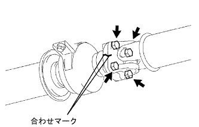

リヤディファレンシャル キャリア オイルシール（4WD） 取り付け |
| 1. リヤディファレンシャル ドライブピニオン ベアリング スペーサ取り付け |
新品のスペーサをディファレンシャルドライブピニオンに取り付ける。
| 2. リヤドライブ ピニオン テーパードローラベアリング FR取り付け |
| 3. リヤディファレンシャル ドライブピニオン オイルスリンガ取り付け |
リヤディファレンシャル ドライブピニオン オイルスリンガを取り付ける。
| 4. リヤディファレンシャル キャリア オイルシール取り付け |
新品のリヤディファレンシャルキャリアオイルシールリップ部にMPグリースNo.2を塗布する。
SSTおよびハンマーを使用して、新品のリヤディファレンシャルキャリアオイルシールを打ち込む。
| 5. リヤ ドライブピニオン コンパニオンフランジ RR取り付け |
 |
SSTを使用して、リヤドライブピニオンコンパニオンフランジを取り付ける。
新品のリヤドライブピニオンナットのねじ部にハイポイドギヤオイルLSDを塗布する。
SSTを使用してリヤドライブピニオンコンパニオンフランジRRを固定し、ディープソケットレンチ(24mm)およびトルクレンチを使用して新品のリヤドライブピニオンナットをプレロードを確認しながら締め付ける。
| 6. デイフアレンシヤルドライブピニオンプレロード点検 |
トルクレンチを使用して、ディファレンシャルドライブピニオンとディファレンシャルリングギヤをバックラッシュの範囲内で起動トルクを点検する。
プレロードが過大の場合は、ベアリングスペーサを交換する。
プレロードが不足の場合は、ナットを5-10°ずつ増し締めしてプレロードを点検し、基準値になるように繰り返し調整する。
| 7. リヤ ドライブピニオン ナット取り付け |
 |
タガネおよびハンマーを使用して、リヤドライブピニオンナットをかしめる。
| 8. プロペラシヤフトASSY RR取り付け |
|  |
インタミディエイトシャフトASSY およびプロペラシャフトASSY RR の合わせマークを合わせ、ボルト４本、ワッシャおよびナット各４個で、インタミディエイ トシャフトASSY を取り付ける。
 |
プロペラシャフトASSY RR およびディファレンシャルフランジ の合わせマークを合わせ、ボルト４本、ワッシャおよびナット各４個で、プロペラシャフトASSY RR を取り付ける。
| 9. ディファレンシャルオイル補充 |
リヤアクスルハウジングフィラプラグおよびガスケットを取りはずす。
オイルを補充する。
オイル量を点検する。
新品のガスケットを介してリヤアクスルハウジングフィラプラグを締め付ける。
| 10. ディファレンシャルオイル点検·調整 |
リヤアクスルハウジングフィラプラグおよびガスケットを取りはずす。
オイルを補充する。
オイル量を点検する。
新品のガスケットを介してリヤアクスルハウジングフィラプラグを締め付ける。